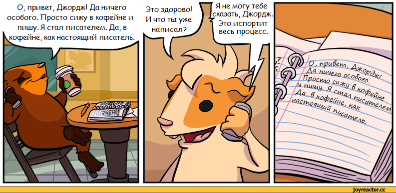
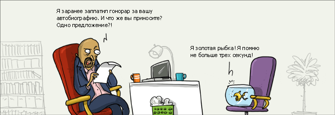
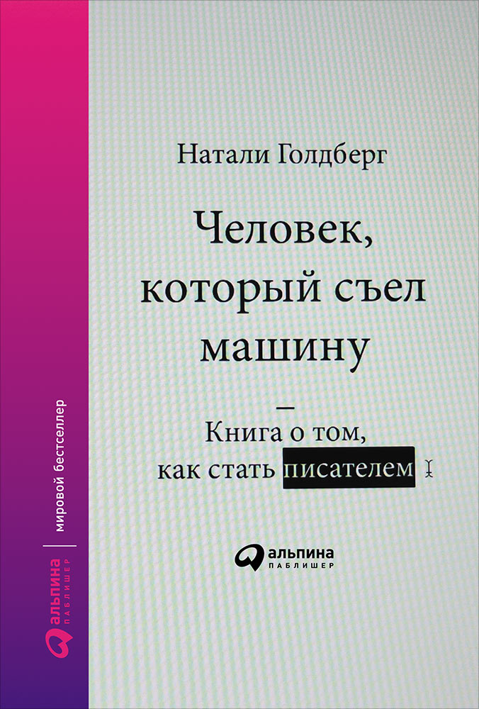

01 ДЕК 2016

Когда мне было 8 лет, я написала книгу и подарила маме на день рождения. Книга называлась «Жизнь Микки», сборник рассказов, написанный толстым фиолетовым фломастером. Вместо иллюстраций там были наклейки. Гости передавали этот артефакт по рукам, читали и довольно быстро начинали помирать со смеху, утирать слезы и зачитывать вслух куски.
Примерно тогда же меня стали обуревать появляющиеся непонятно откуда стихи, которые просто нужно было успевать записывать.
С тех пор прошло почти двадцать лет. Мало что изменилось. Слова, рвущиеся откуда-то наружу, опустошающие, не дающие спать или делать что-то еще, они все еще со мной, и я не знаю, откуда они, но знаю, что это что-то важное. Что-то, в чем я — инструмент, вроде карандаша или клавиатуры.
Мне кажется, писательству нельзя научить. Засилье унылых книг про писательское мастерство навевает на меня тоску. Мы не говорим про деловое письмо и редактуру (и здесь мой земной поклон Максиму Ильяхову), речь именно о литературе. Об искусстве.
Но из чего складывается писатель?
Из незримого острого чувства бытия. Из любви к языку. Из всего, что он прочитал, от собрания сочинений Льва Толстого до состава с упаковки фруктового сока. Из решимости начать и храбрости дать почитать кому-то. Из постоянной практики.
Только что вышла, кажется, единственная книга из всех, что мне попадались, которая может быть настоящим учебником для писателей. Тут нет жесткой системы, нет формул. И вообще (шок!) — книгу можно читать с любого места.
«Человек, который съел машину: Книга о том, как стать писателем» («Writing Down the Bones: Freeing the Writer Within») — проверенная десятилетиями книга, переведенная на 12 языков и вышедшая страшно-сказать-каким тиражом в мире. Она сама читается как роман или сборник эссе, литература совсем неприкладного характера. От нее веет такой же свободой, легкостью и мудростью, как от моих любимых писательских правил Керуака (автор, кстати, на них ссылается).

Натали Голдберг — автор у нас мало известный, но это сапожник с сапогами: она не только учит писателей, но и сама написала нескольких художественных книг-бестселлеров. Чтобы вы почувствовали ее стиль, привожу кусочек:
Мне очень хотелось бы сейчас заново написать школьное сочинение на тему «Как я провела лето». Когда я писала его в пятом классе, мне было страшно, и я могла только констатировать: «Лето было интересным. Мне оно понравилось. Мне было весело». Каким-то образом мне удалось получить тогда четверку — но я все равно не могла понять: как же люди это делают? Теперь для меня все очевидно.
Вы просто рассказываете все как есть и не пренебрегаете деталями: «Моя мама красила волосы в рыжий цвет, а ногти — в серебряный. Я обожала играть в „парчизи“ и бегать под струйками воды из садовых распылителей. Я собирала жуков в банку с завинчивающейся крышкой и кормила их травой. Отец часто подолгу сидел за кухонным столом с банкой „Будвайзера“ в руке и молчал, глядя в пространство».
Какая у меня была прекрасная возможность рассказать о том, как я влюбилась в белобрысого соседского мальчишку, о выпуске теленовостей, посвященном расовой несправедливости, и о том, как мне было стыдно и больно смотреть на это, о том, как я переживала, что моя сестра красивее, чем я, и о том, как мы с бабушкой делали капустный салат! Но тогда я не знала, как поведать обо всем этом.
О том, как это сделать, я и рассказываю здесь. Рассказываю всем — и старым ученикам, и молодым.
Или вот:
В ходе писательской практики очень важно разделять творца и редактора, или внутреннего цензора, чтобы у творца была возможность свободно дышать, исследовать и самовыражаться. Если редактор совсем вас допек и вам тяжело отделить его от своего творческого голоса, сядьте и запишите то, что он говорит, — дайте ему возможность высказаться. «Ты болван! Кто тебе сказал, что ты вообще можешь писать? Я ненавижу то, что ты делаешь! Это мусор, мне за тебя стыдно, тебе нечего сказать! Кроме того, ты лепишь орфографические ошибки…» Знакомо, да?
Чем ближе вы познакомитесь со своим внутренним редактором, тем проще вам будет его игнорировать. Через некоторое время его голос, словно бормотание пьяного бродяги, станет для вас не более чем фоновым шумом.
Есть, конечно, соблазн цитировать с любого места и лить на вас эту ненавязчивую доброту (бывало ли ваше обучение более лиричным?), но ограничимся вот этим авторским напутствием, тем, с чего начать, как настроиться.
Несколько правил:
Этих правил нужно придерживаться, потому что ваша цель — добраться до первичных мыслей, до того места в себе, где ни общественные нормы, ни ваш внутренний цензор не могут блокировать энергию, где вы пишете о том, что на самом деле видит и чувствует ваш разум, а не о том, что он вроде как должен видеть и чувствовать. Это замечательная возможность исследовать все его странные стороны и скрытые грани.

Возможно, именно после прочтения этой книги вы напишете свой первый роман, как в свое время пластинка The Velvet Underground вдохновила 500 человек создать свои музыкальные группы. Как бы там ни было, вам предстоит приятнейшее чтение.
Удачи!